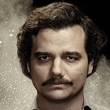
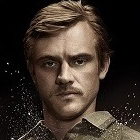
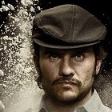

Narcos is een Amerikaanse televisieserie. De eerste twee seizoenen gingen over de DEA-jacht op Pablo Escobar en zijn Medellínkartel van eind jaren 70 tot begin jaren 90 van de twintigste eeuw. Het eerste seizoen van de serie ging op 28 augustus 2015 in première op Netflix. Op 2 september 2016 verscheen het tweede seizoen op Netflix en op 1 september 2017 verscheen het derde seizoen, dat zich richtte op het Calikartel. De vervolgserie genaamd Narcos: Mexico focust op Mexico, waarbij de focus ligt op het Guadalajarakartel.
De serie heeft hoofdzakelijk positieve kritieken ontvangen. Op onlinefilmdatabase IMDb hebben meer dan 37.500 gebruikers de serie met gemiddeld een 9,1 beoordeeld, waarmee het in de top 30 van best beoordeelde televisieseries staat. De serie is zo populair geworden dat zelfs de bookmakers besloten om in hun aanbod een Narcos-speelautomaat op te nemen die in 2019 door NetEnt werd geproduceerd.
Pablo Escobar
Pablo Emilio Escobar Gaviria was een Colombiaanse drugsbaron en narcoterrorist die de oprichter en enige leider was van het Medellí n-kartel . Escobar, ook wel "de koning van de cocaïne" genoemd, was de rijkste crimineel in de geschiedenis, met een geschat vermogen van 30 miljard dollar op het moment van zijn dood. Zijn drugskartel monopoliseerdede cocaïnehandel in de Verenigde Staten in de jaren tachtig en begin jaren negentig.
Steve Murphy
Stephen E. Murphy is een Amerikaanse gepensioneerde federale agent van de Amerikaanse Drug Enforcement Administration (DEA) die, samen met Javier Peña, een van de hoofdonderzoekers was in de klopjacht op de Colombiaanse drugsbaron en leider van het Medellín-kartel (Pablo Escobar).
Javier Peña

Javier F. Peña (geboren in 1958) is een Amerikaanse voormalige Drug Enforcement Administration-agent die onderzoek deed naar Pablo Escobar en het Medellín-kartel. Peña werkte als consultant aan de Netflix-serie Narcos. Na het onderzoek naar het Medellín-kartel werkte Peña voor de DEA met aanvullende opdrachten in Puerto Rico, Texas en Colombia.
Gustavo Gaviria
Gustavo de Jesús Gaviria Rivero was een Colombiaanse drugshandelaar. Als neef en rechterhand van Pablo Escobar controleerde hij de financiën en handelsroutes van het Medellín-kartel. Hij en Escobar hadden sinds het begin van de jaren zeventig samengewerkt in hun criminele carrière. Hoewel hij de eigenaar was van een fortuin dat vergelijkbaar was met dat van Escobar en zelfs een militair apparaat tot zijn dienst had, was Gaviria niet zo bekend, aangezien hij zich onopvallend hield.